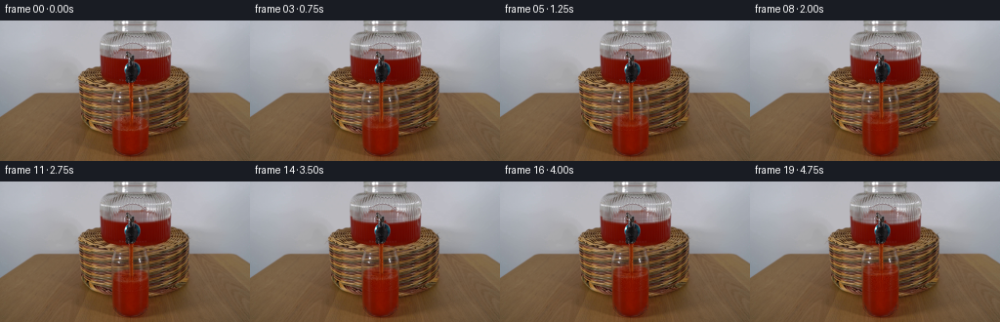
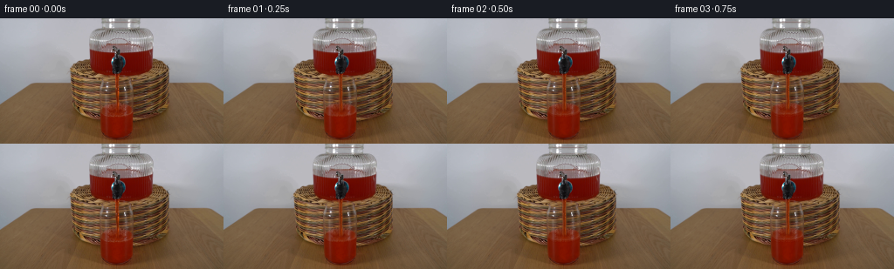

CODING AGENTS AS PIXEL WORLD MODELS
traex/GPT-6-Astra · 0065
点击播放 · 原生 RGB 像素
逐轮保存的候选
回放视频、检查图与代码变化。
每份候选均可单独播放。实际图片检查记录在下方工具轨迹中。
候选 01播放与检查图
点击播放 · 原生 RGB 像素


展开代码变化
--- 上一保存版本
+++ 本次保存版本
@@ -0,0 +1,180 @@
+"""Continue the photographed pour with local, non-learned RGB operations."""
+from pathlib import Path
+import numpy as np
+from PIL import Image
+from scipy.ndimage import map_coordinates, gaussian_filter
+import cv2
+import artifact_io
+
+ROOT = Path(__file__).resolve().parent
+S = 4
+src = np.array(Image.open(ROOT / 'first_frame.png').convert('RGB'))
+H, W = src.shape[:2]
+a = src.astype(np.float64)
+y, x = np.mgrid[:H*S, :W*S].astype(np.float64)
+x = (x + .5)/S - .5
+y = (y + .5)/S - .5
+
+def sample(image, xx=x, yy=y):
+ return np.stack([map_coordinates(image[..., c], [yy, xx], order=1, mode='nearest') for c in range(3)], -1)
+
+def smooth(z):
+ z = np.clip(z, 0, 1)
+ return z*z*(3-2*z)
+
+def mix(bg, fg, opacity):
+ return bg*(1-opacity[..., None]) + fg*opacity[..., None]
+
+base = sample(a)
+# The chrome tap, its handle, and the glass wall are stationary occluders.
+maskim = Image.new('L', (W*S, H*S), 0)
+from PIL import ImageDraw
+p = [(128.8,30.8),(131.2,30.8),(132.4,33.5),(137.9,34.2),
+ (138.7,41.7),(143.7,45.1),(144.2,53),(140.4,58.4),
+ (139,61.9),(136.5,64.3),(131.3,64),(128.8,61.1),
+ (126.2,57.8),(125.8,47.6),(129.2,43.2),(131,41),
+ (129.0,39.4),(128.8,34.8)]
+ImageDraw.Draw(maskim).polygon([(int((xx+.5)*S),int((yy+.5)*S)) for xx,yy in p], fill=255)
+tapmask = gaussian_filter(np.array(maskim)/255., .6*S)
+
+# A tiny, deterministic, texture continuation behind the moving transparent jet.
+# This is conventional image inpainting, not learned synthesis.
+jetmask = np.zeros((H,W), np.uint8)
+jetmask[65:108,131:138] = 255
+clean_native = cv2.inpaint(src, jetmask, 3, cv2.INPAINT_TELEA).astype(float)
+clean = sample(clean_native)
+
+# Measure the original jet's cross-section from a long unobstructed section.
+rows = a[67:98,129:141]
+profile = np.median(rows, axis=0)
+# Optical profile: a dark red center, warm transmitted edge and narrow glint.
+# The RGB values remain calibrated to the actual lighting of the input image.
+jet_alpha_profile = np.array([0,0,.22,.66,.94,1,.94,.50,.14,0,0,0])
+background_profile = np.median(clean_native[67:98,129:141], axis=0)
+jet_rgb_profile = (profile - (1-jet_alpha_profile[:,None])*background_profile) / np.maximum(jet_alpha_profile[:,None],.05)
+jet_rgb_profile = np.clip(jet_rgb_profile, [50,1,0], [183,110,76])
+
+# Photometric high-frequency texture for subtle, moving fluid reflections.
+rng = np.random.default_rng(6531)
+noise = gaussian_filter(rng.normal(size=(H,W)), .55)
+noise /= max(noise.std(), 1e-6)
+
+
+def render(t):
+ # Volume conservation: displacement scales by vessel horizontal area.
+ rise = 3.55*t
+ drop = rise*(18.4/35.0)**2
+ im = base.copy()
+
+ # The broad dispenser meniscus descends while the tap does not move.
+ # Stretch only the clear interior above it; the bottom of the vessel is fixed.
+ yy = y.copy()
+ top, front, bottom = 25.6, 40.25, 65.5
+ nf = front+drop
+ above = y<nf
+ yy[above] = top+(y[above]-top)*(front-top)/(nf-top)
+ yy[~above] = front+(y[~above]-nf)*(bottom-front)/(bottom-nf)
+ yy = np.where(y<top, y, yy)
+ smallwave = .16*np.sin((x-110)*.21+t*3.9)*np.sin(t*1.2)
+ yy += smallwave*np.exp(-((y-(36.8+drop))/4.6)**2)
+ reservoir = sample(a,x,yy)
+ reservoir_mask = (smooth((x-103.4)/1.6)*smooth((174.6-x)/2.0)*
+ smooth((y-25.6)/2.8)*smooth((65.4-y)/2.7))
+ reservoir_mask *= (1-tapmask)
+ # Preserve fixed, achromatic highlights in the glass.
+ glint = smooth((base.max(2)-168)/27)*smooth((32-(base.max(2)-base.min(2)))/20)
+ reservoir_mask *= (1-.93*glint)
+ im = mix(im, reservoir, reservoir_mask)
+
+ # Erase only the old narrow stream, keeping the original surroundings.
+ jet_clean = smooth((x-130.25)/1.0)*smooth((138-x)/1.2)
+ jet_clean *= smooth((y-64.0)/2)*smooth((108-y)/4)
+ ramp = 1-np.exp(-t/.22)
+ im = mix(im, clean, jet_clean*ramp)
+
+ # Convex transparent tumbler: advect the liquid meniscus upwards inside
+ # a fixed silhouette. The original red liquid supplies all of its texture.
+ cx, rad, level, ey = 133.65, 19.15, 105.6-rise, 7.55
+ u = (x-cx)/rad
+ root = np.sqrt(np.maximum(0, 1-u*u))
+ backedge = level-ey*root
+ wave = (.25*np.sin(t*6.1+(x-cx)*.43)+.11*np.sin(t*9.3-(x-cx)*.73))
+ wave *= np.exp(-((y-level)/8.5)**2)*root
+ yf = 113.0-rise
+ sy = np.where(y<yf, y+rise, 113+(y-yf)*(137.2-113)/(137.2-yf))
+ sy -= wave
+ sx = x+.12*np.sin(t*4.7+(y-level)*.8)*np.exp(-((y-level)/8)**2)*root
+ liquid = sample(a, sx, sy)
+ # Thin glass walls and the thick bottom remain registered with the photo.
+ left = 114.55 + 1.7*smooth((y-122)/10)
+ right = 152.05 - 2.0*smooth((y-122)/10)
+ cupmask = smooth((x-left)/1.15)*smooth((right-x)/1.15)
+ cupmask *= smooth((y-backedge+wave+.45)/3.4)
+ cupmask *= smooth((138-y)/2.5)
+ cupmask *= smooth((1.025-np.abs(u))/.09)
+ # Blend at the initial back edge, retaining the slightly refracted basket.
+ im = mix(im, liquid, cupmask)
+
+ # Continuous free-falling jet. Small advecting corrugations travel down the
+ # column, but the nozzle is anchored and the mean trajectory is vertical.
+ depth = np.maximum(y-64,0)
+ center = 134.05 + .24*np.sin(t*5.8-depth*.31)*smooth(depth/8)
+ center += .09*np.sin(t*10.2-depth*.61)*smooth(depth/12)
+ jwidth = 1+.045*np.sin(depth*.49-t*11.7)*smooth(depth/6)
+ px = 134+(x-center)/jwidth
+ ids = np.arange(129,141)
+ alpha = np.interp(px, ids, jet_alpha_profile, left=0, right=0)
+ jet = np.stack([np.interp(px, ids, jet_rgb_profile[:,c]) for c in range(3)],-1)
+ flow = (2.8*np.sin(depth*.82-t*12.9)+1.6*np.sin(depth*1.51-t*18.7))
+ jet += flow[...,None]*np.array([1,.55,.26])
+ highlight = np.exp(-((x-center+.85)/.30)**2)
+ highlight *= 3.6*(.5+.5*np.sin(depth*.53-t*13))
+ jet += highlight[...,None]*np.array([1,.73,.40])
+ end = level + .15
+ alpha *= smooth((y-64.0)/1.6)*smooth((end+1.5-y)/2.1)*ramp
+ im = mix(im, jet, alpha)
+
+ # Shallow, damped ripples at the impact point. No large or unrelated splashes.
+ dx = x-134.05
+ dy = (y-(level+.45))/.38
+ rr = np.sqrt(dx*dx+dy*dy)
+ elliptic = ((x-cx)/18.1)**2 + ((y-level)/7.1)**2
+ surfmask = smooth((1-elliptic)/.16)*cupmask
+ ripple = np.sin(rr*2.0-t*9.4)*np.exp(-rr/10.5)
+ ripple *= smooth(rr/1.7)*smooth((16.5-rr)/3)*surfmask
+ im += ripple[...,None]*np.array([3.8,2.5,1.5])*ramp
+ # Tiny fluctuating dimple where the stream enters the liquid surface.
+ dimple = np.exp(-((x-134.05)/1.25)**2-((y-level-.55)/.55)**2)*surfmask
+ im = mix(im, np.broadcast_to([86.,17.,4.], im.shape), dimple*.26*ramp)
+ # Small low-contrast reddish highlights carried around the impact region.
+ for j in range(3):
+ phase=(t*(.65+.11*j)+j*.31)%1
+ bx=134.05+(-1 if j%2 else 1)*(1.4+6.1*phase)
+ by=level+.6+1.35*phase+.35*np.sin(t*4+j)
+ opacity=np.sin(np.pi*phase)**2*.30*ramp
+ bubble=np.exp(-((x-bx)/(.35+.1*phase))**2-((y-by)/.23)**2)
+ im=mix(im, np.broadcast_to([166.,68.,39.], im.shape), bubble*opacity*surfmask)
+
+ # Supersampled deltas avoid changing even a single stationary background
+ # pixel merely due to resampling the original photograph.
+ delta = (im-base).reshape(H,S,W,S,3).mean((1,3))
+ return np.clip(np.rint(a+delta),0,255).astype(np.uint8)
+
+
+def main():
+ frames = [src.copy()]
+ for i in range(1,20):
+ frames.append(render(i/4))
+ frames = np.stack(frames)
+ assert np.array_equal(frames[0],src)
+ artifact_io.save(frames, ROOT)
+ # A conventional RGB MP4 is also convenient outside the included player.
+ import imageio.v2 as imageio
+ imageio.mimwrite(ROOT/'video.mp4',frames,fps=4,codec='libx264',quality=9,
+ macro_block_size=1,pixelformat='yuv444p',ffmpeg_log_level='error')
+ print('Saved:', frames.shape, frames.dtype)
+ print('First frame identical:',np.array_equal(frames[0],src))
+ print('Frame change mean RGB:',[round(float(np.abs(frames[i].astype(float)-frames[i-1]).mean()),3) for i in range(1,20)])
+
+if __name__ == '__main__':
+ main()
候选 02播放与检查图
点击播放 · 原生 RGB 像素

展开代码变化
--- 上一保存版本
+++ 本次保存版本
@@ -101,7 +101,10 @@
wave = (.25*np.sin(t*6.1+(x-cx)*.43)+.11*np.sin(t*9.3-(x-cx)*.73))
wave *= np.exp(-((y-level)/8.5)**2)*root
yf = 113.0-rise
- sy = np.where(y<yf, y+rise, 113+(y-yf)*(137.2-113)/(137.2-yf))
+ # Anchor the opaque lower liquid and thick glass foot; only the surface
+ # and upper liquid need vertical redistribution.
+ sy = np.where(y<yf, y+rise, 113+(y-yf)*(129.0-113)/(129.0-yf))
+ sy = np.where(y>=129.0, y, sy)
sy -= wave
sx = x+.12*np.sin(t*4.7+(y-level)*.8)*np.exp(-((y-level)/8)**2)*root
liquid = sample(a, sx, sy)
候选 03播放与检查图
可观测工具轨迹
实际执行的命令与返回图片。
命令 1exit 0
/bin/bash -lc "ls -la && cat prompt.txt && printf '\\n---RULES---\\n' && cat GENERATION_RULES.md"
命令 2exit 0
/bin/bash -lc "cat artifact_io.py && python - <<'PY'
from PIL import Image
import numpy as np
im=np.array(Image.open('first_frame.png'))
print(im.shape)
print('quantized RGB color distribution:')
a=(im//32*32).reshape(-1,3); u,c=np.unique(a,axis=0,return_counts=True)
for i in np.argsort(c)[-30:][::-1]: print(u[i],c[i])
print('8x8 pixel block RGB averages:')
for y in range(0,144,8):
print(y,' '.join('%02x%02x%02x'%tuple(v) for v in np.mean(im[y:y+8].reshape(8,32,8,3),axis=(0,2)).astype(int)))
PY"命令 3exit 0
/bin/bash -lc "python - <<'PY'
import numpy as np
from PIL import Image
im=np.array(Image.open('first_frame.png')).astype(float)
r,g,b=im.transpose(2,0,1)
# Semantic color threshold grid: R red liquid, r reddish amber; * dark/neutral, +bright/neutral, b brown material
s=np.full(r.shape,'.')
s[(r>g*1.22)&(g>b*1.1)]='b'
s[(r>g*1.8)&(r>b*2)&(r>60)]='r'
s[(r>g*3)&(r>b*3)&(r>60)]='R'
s[(abs(r-g)<15)&(abs(g-b)<15)&(r<100)]='*'
s[(abs(r-g)<15)&(abs(g-b)<15)&(r>=100)&(r<160)]=':'
s[(abs(r-g)<15)&(abs(g-b)<15)&(r>=190)]='+'
s[(r+g+b)<80]='X'
for y in range(0,144):
print('%03d '%y+''.join(s[y,85:182]))
print('Red counts and bounds by row')
for y in range(25,141):
ix=np.where((r[y]>2.5*g[y])&(r[y]>2.5*b[y])&(r[y]>65))[0]
if len(ix): print(y,ix[0],ix[-1],len(ix))
PY"命令 4exit 0
/bin/bash -lc "python - <<'PY'
from PIL import Image
import numpy as np
im=np.array(Image.open('first_frame.png'))
for y in [24,27,29,30,32,34,35,36,37,38,39,40,41,42,44,64,68,70,72,74,76,78,80,82,84,86,90,94,98,100,102,104,106,108,110,112,114,120,130,135,138]:
print('y=',y)
for x in range(102,176,2):
print(str(x)+':'+','.join(map(str,im[y,x])),end=' ')
print()
PY"命令 5exit 0
/bin/bash -lc "python - <<'PY'
import numpy as np
from PIL import Image
im=np.array(Image.open('first_frame.png')).astype(float)
# luminance numeric ASCII local glass crop
lum=im.mean(2)
pal=' .,:;irsXA253hMHGS#9B&@'
print('Crop x106..160 y65..140: luminance, bounds min 15 max 190')
for y in range(65,141):
s=''.join(pal[int(np.clip((v-15)/175,0,.9999)*len(pal))] for v in lum[y,106:161])
print('%03d '%y+s)
print('Neutral reflection candidates cup upper')
for y in range(69,101):
a=im[y]; ix=np.where((np.max(a,axis=1)-np.min(a,axis=1)<27)&(a[:,0]>100)&(np.arange(256)>110)&(np.arange(256)<155))[0]
print(y,[(int(x),list(a[x].astype(int))) for x in ix])
PY"命令 6exit 0
/bin/bash -lc "python - <<'PY' import importlib.util for m in ['numpy','PIL','scipy','cv2','imageio','imageio_ffmpeg']: print(m, bool(importlib.util.find_spec(m))) PY"
命令 7exit 0
/bin/bash -lc "cat > generate.py <<'PY'
\"\"\"Continue the photographed pour with local, non-learned RGB operations.\"\"\"
from pathlib import Path
import numpy as np
from PIL import Image
from scipy.ndimage import map_coordinates, gaussian_filter
import cv2
import artifact_io
ROOT = Path(__file__).resolve().parent
S = 4
src = np.array(Image.open(ROOT / 'first_frame.png').convert('RGB'))
H, W = src.shape[:2]
a = src.astype(np.float64)
y, x = np.mgrid[:H*S, :W*S].astype(np.float64)
x = (x + .5)/S - .5
y = (y + .5)/S - .5
def sample(image, xx=x, yy=y):
return np.stack([map_coordinates(image[..., c], [yy, xx], order=1, mode='nearest') for c in range(3)], -1)
def smooth(z):
z = np.clip(z, 0, 1)
return z*z*(3-2*z)
def mix(bg, fg, opacity):
return bg*(1-opacity[..., None]) + fg*opacity[..., None]
base = sample(a)
# The chrome tap, its handle, and the glass wall are stationary occluders.
maskim = Image.new('L', (W*S, H*S), 0)
from PIL import ImageDraw
p = [(128.8,30.8),(131.2,30.8),(132.4,33.5),(137.9,34.2),
(138.7,41.7),(143.7,45.1),(144.2,53),(140.4,58.4),
(139,61.9),(136.5,64.3),(131.3,64),(128.8,61.1),
(126.2,57.8),(125.8,47.6),(129.2,43.2),(131,41),
(129.0,39.4),(128.8,34.8)]
ImageDraw.Draw(maskim).polygon([(int((xx+.5)*S),int((yy+.5)*S)) for xx,yy in p], fill=255)
tapmask = gaussian_filter(np.array(maskim)/255., .6*S)
# A tiny, deterministic, texture continuation behind the moving transparent jet.
# This is conventional image inpainting, not learned synthesis.
jetmask = np.zeros((H,W), np.uint8)
jetmask[65:108,131:138] = 255
clean_native = cv2.inpaint(src, jetmask, 3, cv2.INPAINT_TELEA).astype(float)
clean = sample(clean_native)
# Measure the original jet's cross-section from a long unobstructed section.
rows = a[67:98,129:141]
profile = np.median(rows, axis=0)
# Optical profile: a dark red center, warm transmitted edge and narrow glint.
# The RGB values remain calibrated to the actual lighting of the input image.
jet_alpha_profile = np.array([0,0,.22,.66,.94,1,.94,.50,.14,0,0,0])
background_profile = np.median(clean_native[67:98,129:141], axis=0)
jet_rgb_profile = (profile - (1-jet_alpha_profile[:,None])*background_profile) / np.maximum(jet_alpha_profile[:,None],.05)
jet_rgb_profile = np.clip(jet_rgb_profile, [50,1,0], [183,110,76])
# Photometric high-frequency texture for subtle, moving fluid reflections.
rng = np.random.default_rng(6531)
noise = gaussian_filter(rng.normal(size=(H,W)), .55)
noise /= max(noise.std(), 1e-6)
def render(t):
# Volume conservation: displacement scales by vessel horizontal area.
rise = 3.55*t
drop = rise*(18.4/35.0)**2
im = base.copy()
# The broad dispenser meniscus descends while the tap does not move.
# Stretch only the clear interior above it; the bottom of the vessel is fixed.
yy = y.copy()
top, front, bottom = 25.6, 40.25, 65.5
nf = front+drop
above = y<nf
yy[above] = top+(y[above]-top)*(front-top)/(nf-top)
yy[~above] = front+(y[~above]-nf)*(bottom-front)/(bottom-nf)
yy = np.where(y<top, y, yy)
smallwave = .16*np.sin((x-110)*.21+t*3.9)*np.sin(t*1.2)
yy += smallwave*np.exp(-((y-(36.8+drop))/4.6)**2)
reservoir = sample(a,x,yy)
reservoir_mask = (smooth((x-103.4)/1.6)*smooth((174.6-x)/2.0)*
smooth((y-25.6)/2.8)*smooth((65.4-y)/2.7))
reservoir_mask *= (1-tapmask)
# Preserve fixed, achromatic highlights in the glass.
glint = smooth((base.max(2)-168)/27)*smooth((32-(base.max(2)-base.min(2)))/20)
reservoir_mask *= (1-.93*glint)
im = mix(im, reservoir, reservoir_mask)
# Erase only the old narrow stream, keeping the original surroundings.
jet_clean = smooth((x-130.25)/1.0)*smooth((138-x)/1.2)
jet_clean *= smooth((y-64.0)/2)*smooth((108-y)/4)
ramp = 1-np.exp(-t/.22)
im = mix(im, clean, jet_clean*ramp)
# Convex transparent tumbler: advect the liquid meniscus upwards inside
# a fixed silhouette. The original red liquid supplies all of its texture.
cx, rad, level, ey = 133.65, 19.15, 105.6-rise, 7.55
u = (x-cx)/rad
root = np.sqrt(np.maximum(0, 1-u*u))
backedge = level-ey*root
wave = (.25*np.sin(t*6.1+(x-cx)*.43)+.11*np.sin(t*9.3-(x-cx)*.73))
wave *= np.exp(-((y-level)/8.5)**2)*root
yf = 113.0-rise
sy = np.where(y<yf, y+rise, 113+(y-yf)*(137.2-113)/(137.2-yf))
sy -= wave
sx = x+.12*np.sin(t*4.7+(y-level)*.8)*np.exp(-((y-level)/8)**2)*root
liquid = sample(a, sx, sy)
# Thin glass walls and the thick bottom remain registered with the photo.
left = 114.55 + 1.7*smooth((y-122)/10)
right = 152.05 - 2.0*smooth((y-122)/10)
cupmask = smooth((x-left)/1.15)*smooth((right-x)/1.15)
cupmask *= smooth((y-backedge+wave+.45)/3.4)
cupmask *= smooth((138-y)/2.5)
cupmask *= smooth((1.025-np.abs(u))/.09)
# Blend at the initial back edge, retaining the slightly refracted basket.
im = mix(im, liquid, cupmask)
# Continuous free-falling jet. Small advecting corrugations travel down the
# column, but the nozzle is anchored and the mean trajectory is vertical.
depth = np.maximum(y-64,0)
center = 134.05 + .24*np.sin(t*5.8-depth*.31)*smooth(depth/8)
center += .09*np.sin(t*10.2-depth*.61)*smooth(depth/12)
jwidth = 1+.045*np.sin(depth*.49-t*11.7)*smooth(depth/6)
px = 134+(x-center)/jwidth
ids = np.arange(129,141)
alpha = np.interp(px, ids, jet_alpha_profile, left=0, right=0)
jet = np.stack([np.interp(px, ids, jet_rgb_profile[:,c]) for c in range(3)],-1)
flow = (2.8*np.sin(depth*.82-t*12.9)+1.6*np.sin(depth*1.51-t*18.7))
jet += flow[...,None]*np.array([1,.55,.26])
highlight = np.exp(-((x-center+.85)/.30)**2)
highlight *= 3.6*(.5+.5*np.sin(depth*.53-t*13))
jet += highlight[...,None]*np.array([1,.73,.40])
end = level + .15
alpha *= smooth((y-64.0)/1.6)*smooth((end+1.5-y)/2.1)*ramp
im = mix(im, jet, alpha)
# Shallow, damped ripples at the impact point. No large or unrelated splashes.
dx = x-134.05
dy = (y-(level+.45))/.38
rr = np.sqrt(dx*dx+dy*dy)
elliptic = ((x-cx)/18.1)**2 + ((y-level)/7.1)**2
surfmask = smooth((1-elliptic)/.16)*cupmask
ripple = np.sin(rr*2.0-t*9.4)*np.exp(-rr/10.5)
ripple *= smooth(rr/1.7)*smooth((16.5-rr)/3)*surfmask
im += ripple[...,None]*np.array([3.8,2.5,1.5])*ramp
# Tiny fluctuating dimple where the stream enters the liquid surface.
dimple = np.exp(-((x-134.05)/1.25)**2-((y-level-.55)/.55)**2)*surfmask
im = mix(im, np.broadcast_to([86.,17.,4.], im.shape), dimple*.26*ramp)
# Small low-contrast reddish highlights carried around the impact region.
for j in range(3):
phase=(t*(.65+.11*j)+j*.31)%1
bx=134.05+(-1 if j%2 else 1)*(1.4+6.1*phase)
by=level+.6+1.35*phase+.35*np.sin(t*4+j)
opacity=np.sin(np.pi*phase)**2*.30*ramp
bubble=np.exp(-((x-bx)/(.35+.1*phase))**2-((y-by)/.23)**2)
im=mix(im, np.broadcast_to([166.,68.,39.], im.shape), bubble*opacity*surfmask)
# Supersampled deltas avoid changing even a single stationary background
# pixel merely due to resampling the original photograph.
delta = (im-base).reshape(H,S,W,S,3).mean((1,3))
return np.clip(np.rint(a+delta),0,255).astype(np.uint8)
def main():
frames = [src.copy()]
for i in range(1,20):
frames.append(render(i/4))
frames = np.stack(frames)
assert np.array_equal(frames[0],src)
artifact_io.save(frames, ROOT)
# A conventional RGB MP4 is also convenient outside the included player.
import imageio.v2 as imageio
imageio.mimwrite(ROOT/'video.mp4',frames,fps=4,codec='libx264',quality=9,
macro_block_size=1,pixelformat='yuv444p',ffmpeg_log_level='error')
print('Saved:', frames.shape, frames.dtype)
print('First frame identical:',np.array_equal(frames[0],src))
print('Frame change mean RGB:',[round(float(np.abs(frames[i].astype(float)-frames[i-1]).mean()),3) for i in range(1,20)])
if __name__ == '__main__':
main()
PY
python generate.py"命令 8exit 0
/bin/bash -lc "python - <<'PY'
from pathlib import Path
from PIL import Image
import numpy as np
s=np.array(Image.open('first_frame.png')).astype(int)
f=np.array(Image.open('frames/19.png')).astype(int)
for region,b in [('reservoir',(104,26,174,66)),('glass',(114,76,153,138)),('jet',(130,65,139,98))]:
x0,y0,x1,y1=b
print(region, 'mean change',abs(f[y0:y1,x0:x1]-s[y0:y1,x0:x1]).mean())
for y in [70,75,80,85,88,90,92,94,96,98,100,105,110,115,120,130,135]:
print(y, 'orig',s[y,120:149:4].tolist(),'end',f[y,120:149:4].tolist())
print('Artifacts:',[(p.name,p.stat().st_size) for p in Path('.').iterdir() if p.name in ['pixels.npz','video.mp4','index.html','inspection.png','transition_check.png','generate.py']])
PY"命令 9exit 0
/bin/bash -lc "python - <<'PY'
p='generate.py'
s=open(p).read()
s=s.replace(\" sy = np.where(y<yf, y+rise, 113+(y-yf)*(137.2-113)/(137.2-yf))\\n sy -= wave\", \" # Anchor the opaque lower liquid and thick glass foot; only the surface\\n # and upper liquid need vertical redistribution.\\n sy = np.where(y<yf, y+rise, 113+(y-yf)*(129.0-113)/(129.0-yf))\\n sy = np.where(y>=129.0, y, sy)\\n sy -= wave\")
open(p,'w').write(s)
PY
python generate.py
python - <<'PY'
from pathlib import Path
from PIL import Image
import numpy as np
frames=np.stack([np.array(Image.open(f'frames/{i:02}.png')) for i in range(20)])
initial=np.array(Image.open('first_frame.png'))
assert frames.shape==(20,144,256,3)
assert frames.dtype==np.uint8
assert np.array_equal(frames[0],initial)
p=np.load('pixels.npz')['pixels']
assert p.shape==(144,256,20)
assert all(Path(v).is_file() for v in ['generate.py','pixels.npz','index.html','video.mp4','inspection.png','transition_check.png'])
# Check unchanged set/background and that cup liquid level rises monotonically.
mask=np.ones((144,256),bool);mask[24:67,102:176]=False;mask[64:141,113:155]=False
assert np.array_equal(frames[:,mask],np.broadcast_to(initial[mask],frames[:,mask].shape))
for i in [0,5,10,15,19]:
a=frames[i].astype(float)
red=(a[:,:,0]>a[:,:,1]*2.4)&(a[:,:,0]>a[:,:,2]*3)
print('frame',i,'glass strongly red pixels',int(red[83:135,116:151].sum()))
print('All artifact and locked-background checks passed.')
PY"保存候选 3 份；完成命令 9 次；可验证图片返回 0 张。原始 API 响应与完整日志保留在本地。